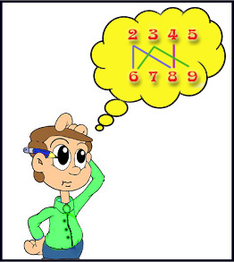

|
You will be given two sets of integers. Let’s call them set A and set B. Set A contains n elements and set B contains m elements. You have to remove k1 elements from set A and k2 elements from set B so that of the remaining values no integer in set B is a multiple of any integer in set A. k1 should be in the range [0,n] and k2 in the range [0,m].
You have to find the value of (k1+k2) such that (k1+k2) is as low as possible.
P is a multiple of Q if there is some integer K such that P = K * Q.

Suppose set A is {2,3,4,5} and set B is {6,7,8,9}. By removing 2 and 3 from A and 8 from B, we get the sets {4,5} and {6,7,9}. Here none of the integers 6, 7 or 9 is a multiple of 4 or 5.
So for this case the answer is 3 (2 from set A and 1 from set B).
The first line of input is an integer T(T<50) that determine the number of test cases. Each case consists of two lines. The first line starts with n followed by n integers. The second line starts with m followed by m integers. Both n and m will be in the range [1,100]. All the elements of the two sets will fit in 32 bit signed integer.
For each case, output the case number followed by the answer.
|
Sample Input |
Output for Sample Input |
24 2 3 4 54 6 7 8 93 100 200 3001 150 |
Case 1: 3Case 2: 0 |
Problem
Setter: Sohel Hafiz
Special Thanks: Jane Alam Jan